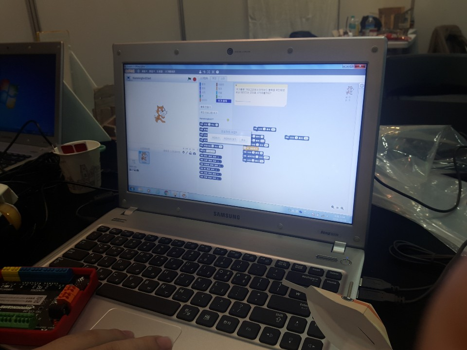

- 여정
- 보고 들은 것
- 느낀 점 및 웹 제작 동기
아두이노 전광판 만들기
sw우수 교육 선도학교에서 아두이노를 활용한 강당 제어 시스템에 대한 설명을 듣고 옆에 있는 초등학교 부스에서
아두이노 전광판 만들기를 하였다. 초등학생이 참 똘똘하게 설명을 잘해주었다.
아두이노 보드에다가 건전지를 끼우고 전선을 알맞은 위치에 연결한 다음 프로그램을 연결하는 아주 간단한 만들기 였다.
나는 내이름을 전광판 프로그램에 넣었다.

신문기사를 쓰려고 취재차(?) 초등학생에게 질문을 했는데 친절한 답변을 해주었다.
어떻게 이 부스를 운영하게 되었냐고 물으니 동아리에서 했다고 했다.
직접 이 프로그램을 구상하였냐고 물어보니 큰 틀은 선생님이 가르쳐주시고 학생들이 직접 응용하여
본 활동을 계획하였다고 하였다.
이렇게 프로그램을 계획하고 체험객을 모으려고 애쓰는 초등학생이 참대견하다고 생각했고, 초등학교 sw 교육에 대한 많은 궁금증이 들었다.
(예를 들면 어떤 식으로 수업을 진행하는지랑 이렇게 단순하게 전광판을 만드는게 창의력 향상이나 실질적인 정서적 지적 발달 측면에서 어떤 효과가 있는지등)
SW 창의적 교육 체험관
중학생 2학년 이상을 대상으로 이루어지는 실제 SW 교육을 시연하는 자리에 참가하였다.
수업제목은 "아두이노키트와 스마트폰을 통한 홈 오토메이션"이였다.
수업은 코딩을 모바일로 해볼 수 있는 Handy Code앱을 통하여 진행되었다. 아두이노 키트와 연결해서 프로그램을 만드는 거였는데
주변이 너무 시끄러워서 일단 선생님이 무슨말씀 하시는지 하나도 안들렸고, 열심히 하고 질문도 했는데 실행은 커녕 전기에 불도 안들어와서 흥미를 잃었다.
(=지루했다.역시 난 문과)
민간기업 SW 교육 사회 공헌 활동
우연히 이 곳에서 체험을 하게 되었다. 스크래치를 활용하여 종이 인형을 만드는 코딩체험이였다.
예전에 엔트리는 한적이 있었는데 스크래치는 처음 이었다. 종이를 오리고 간단히 조작하는 방법을 배웠는데 소리 크기에 따라 종이 소가 앞으로 움직였다(!)
완전 신기해서 보고 있었는데 도우미 선생님께서 내가 직접해보라고 미션을 주셨다.
쥐인형이 0도 일때 뱀꼬리가 초록불, 쥐인형이 90도로 일어섰을 때는 뱀 목에 빨간불이 들어오게 하는 프로그램을 제작해보라는 것이였다.,,!
처음에는 완전 당황했는데 키트에 전선을 뽑고 이것저것 누르고 선생님의 도움 약간을 받으니깐 되었다!! 그때 나는 너무너무 기분이 좋았다.ㅋㅋ
내가 머리속으로만 구상한 것이 실제로 나타나니 너무 기뻤다.그래서 우리는 각자 코딩한 인형들로 미니 인형극을 했다.
선생님이 말씀하시길 실제로 초등학생이 이 프로그램을 바탕으로 자신이 직접 스토리텔링으로 이야기를 구성하고 코딩을 하여 실제로 구현하는 방식으로
코딩교육이 진행될 수도 있다고 하셨다. 신기했다. 내가 코딩교육이 의무화되지 않았던 시대에 태어난것이 살짝 안타까웠다.

중학생 수업을 들으니 어려웠는데 초등학생 교육을 들으니 너무 재미있었다. 우리들은 어렵게 느껴졌는데 이것은 쉬운 거라고 하셨다.
그래도 우리는 SW 초보자니깐 괜찮다! 재미와 자극을 느낀 것만으로도 충분하다. 이 체험 덕분에 나는 이렇게 웹페이지를 만들고 있지 않은가!
MORE
이 밖에도 직접 설계한 기계를 활용한 사탕 뽑기 EBS 이솦(EBS 소프트웨어 프로그램)을 체험하고 이수하였다.
내가 알지못했지만 소프트웨어와 관련해서 온오프라인 교육 프로그램이 무료로 잘 마련되어 있다는 것을 느꼈다.